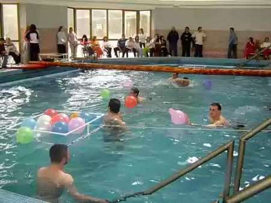

SRBIJA

Prolom Banja se nalazi na jugu Srbije, na nadmorskoj visini od 550-668 m. Udaljena je od Kuršumlije 23 km, od Beograda 290 km, a od Niša 82 km. Do
Prolom Banje se može doći auto-putem Beograd-Niš, a zatim magistralnim putem Niš-Rudare. Umereno-koninentalna klima i bujna vegetacija stimulativno
deluju na čovečji organizam, jačajući njegovu otpornost, pa se Prolom Banja ubraja i u klimatska lečilišta.
Prolom Banja ima više izvora termomineralne vode (temperatura od 26 do 31,5°C), koje pripadaju niskomineralizovanim visokoalkalnim termama. S obzirom
na sastav (veliki broj minerala u malim količinama) voda ima izraženo diuretičko i bakteriostatno dejstvo. „Prolom voda“ je prijatnog ukusa, bez mirisa,
pa se preporučuje i zdravim osobama.
Terapijski blok u banji je kapaciteta 1500 pacijenata dnevno. Banjski tretman obuhvata pijenje lekovite vode, hidroterapiju, terapiju blatom,
elektroterapiju, kineziterapiju i ručnu masažu. U okviru terapijskog bloka gostima je na raspolaganju ultrazvuk, radi preciznog utvrđivanja dijagnoze,
kao i laseroterapija. Sve vrste terapije se obavljaju pod nadzorom medicinske službe.
U Prolom Banji se leče: